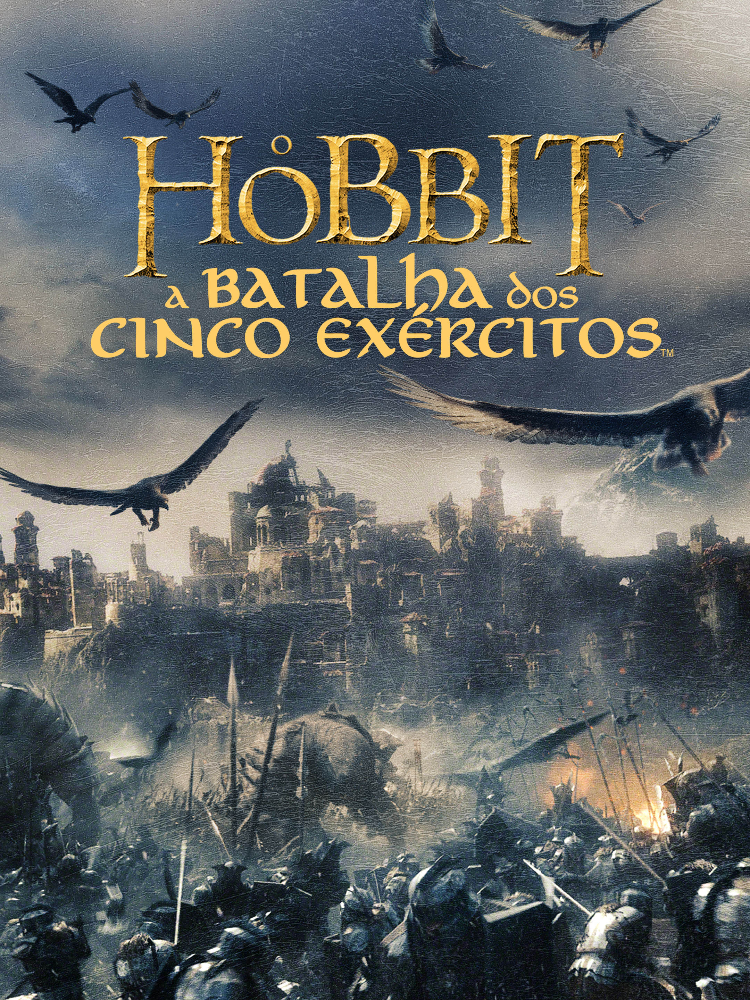
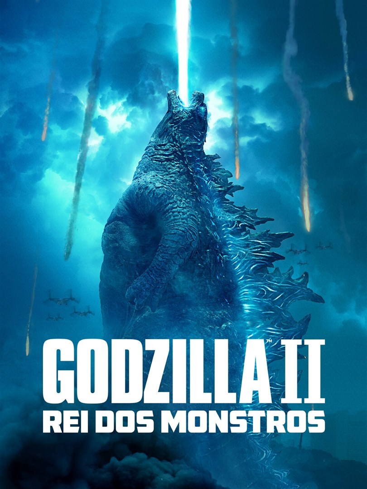
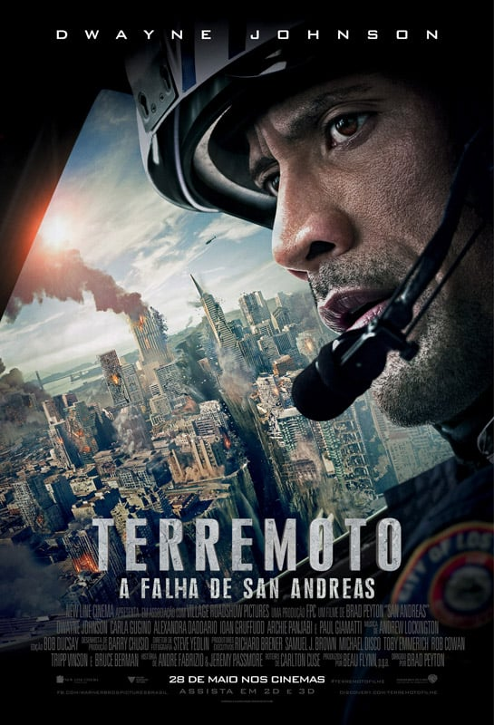
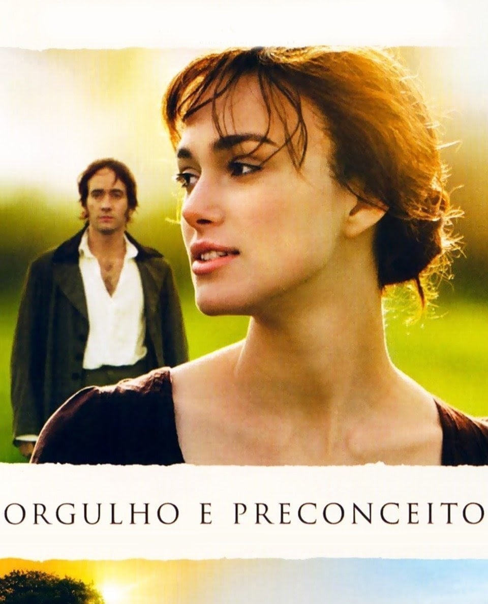
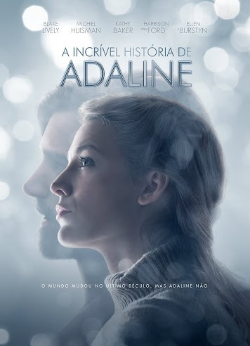
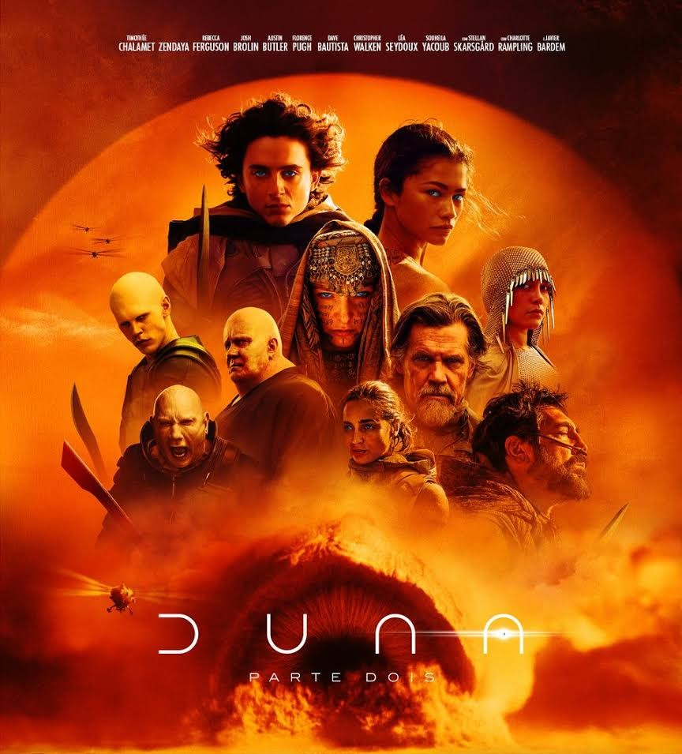
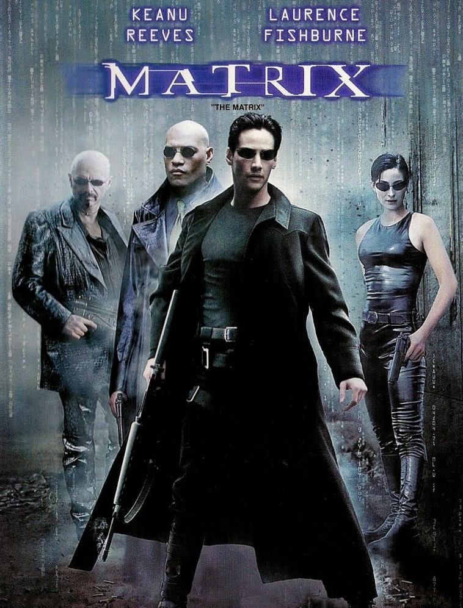
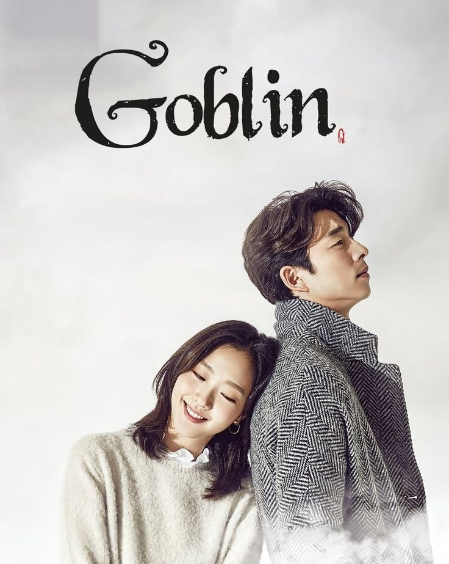
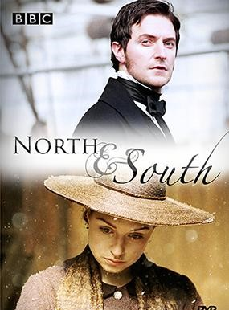

O Senhor dos Anéis
A Sociedade do Anel

Em uma terra fantástica e única, um hobbit recebe de presente de seu tio um anel mágico e maligno que precisa ser destruído antes que caia nas mãos do mal. Para isso, o hobbit Frodo tem um caminho árduo pela frente, onde encontra perigo, medo e seres bizarros. Ao seu lado para o cumprimento desta jornada, ele aos poucos pode contar com outros hobbits, um elfo, um anão, dois humanos e um mago, totalizando nove seres que formam a Sociedade do Anel.
O Hobbit
A Batalha dos Cinco Exercítos

O dragão Smaug lança sua fúria ardente contra a Cidade do Lago que fica próxima da montanha de Erebor. Bard consegue derrotá-lo, mas, rapidamente, sem a ameaça do dragão, inicia-se uma batalha pelo controle de Erebor e sua riqueza. Os anões, liderados por Thorin, adentram a montanha e estão dispostos a impedir a entrada de elfos, anões e orcs. Bilbo Bolseiro e Gandalf tentam impedir a guerra.
Godzilla II
Rei dos Monstros

Membros da agência Monarch enfrentam monstros gigantescos, incluindo o poderoso Godzilla, que entra em choque com Mothra, Rodan e seu maior inimigo, King Ghidorah, o monstro de três cabeças. Essas antigas superespécies disputam a supremacia, deixando a própria existência da humanidade em risco.
Terremoto
A Falha de San Andreas

Depois de um terremoto de grande intensidade destruir a Califórnia, o piloto de helicóptero Ray (Dwayne Johnson) especializado em resgate inicia uma difícil jornada para encontrar sua ex-esposa (Carla Gugino) e sua filha Blake (Alexandra Daddario).
Orgulho e Preconceito
O maior sonho da Sra. Bennet (Brenda Blethyn), mãe de cinco filhas, é ver suas meninas casadas e com uma vida confortável. Quando o Sr. Bingley (Simon Woods) se muda para perto de sua casa, ela vê a oportunidade de um marido para sua mais velha e mais bela filha, Jane (Rosamund Pike). Durante um baile, a intrépida senhora faz questão de se apresentar e apresentar sua família, e assim fica conhecendo Bingley, sua irmã Caroline (Kelly Reilly) e seu melhor amigo, Sr. Darcy (Matthew Macfadyen). De cara, a segunda menina Bennet, Elizabeth (Keira Knightley), tem uma má impressão de Darcy devido à algumas coisas que escuta e que lhe dizem respeito. Após o baile o destino proporciona vários encontros entre os dois, que se estranham cada vez mais. Baseado no romance homônimo de Jane Austen.
Cartas para Julieta
Em Cartas para Julieta, Sophie (Amanda Seyfried) é uma aspirante a escritora que viaja para a Itália ao lado do noivo Victor (Gael García Bernal), que sonha em ter seu próprio restaurante. Em Verona, onde se passou a história de Romeu e Julieta, local perfeito para uma lua de mel antecipada, Sophie acaba percebendo que seu noivo está mais interessado nos fornecedores para seu restaurante do que nela. Na cidade descobre uma antiga carta de amor e junta-se a um grupo de voluntárias que responde estas missivas amorosas. Para sua surpresa, a remetente Claire Smith (Vanessa Redgrave) ouve o conselho dado na resposta e vai procurar Lorenzo, por quem se apaixonou na juventude. Mas existem muitos italianos com o mesmo nome e Sophie demonstra interesse em ajudá-la na tarefa, desagradando o neto Charlie (Christopher Egan), que já tinha reprovado essa louca aventura da avó viúva.
A Sociedade Literária e
a Torta de Casca de Batata
a Torta de Casca de Batata.">
Juliet Ashton (Lily James) é uma escritora na Londres de 1946 que decide visitar Guernsey, uma das Ilhas do Canal invadidas pela Alemanha durante a Segunda Guerra Mundial, depois que ela recebe uma carta de um fazendeiro contando sobre como um clube do livro local foi fundado durante a guerra. Lá ela constrói profundos relacionamentos com os moradores da ilha e decide escrever um livro sobre as experiências deles na guerra.
A Incrível História de Adaline
Adaline Bowman (Blake Lively) nasceu na virada do século XX. Ela tinha uma vida normal até sofrer um grave acidente de carro. Desde então, ela, milagrosamente, não consegue mais envelhecer, se tornando um ser imortal com a aparência de 29 anos. Ela vive uma existência solitária, nunca se permitindo criar laços com ninguém, para não ter seu segredo revelado. Mas ela conhece o jovem filantropo, Ellis Jones (Michiel Huisman), um homem por quem pode valer a pena arriscar sua imortalidade.
Duna 2
Em Duna: Parte 2, Paul Atreides (Timothée Chalamet) se une a Chani (Zendaya) e aos Fremen enquanto busca vingança contra os conspiradores que destruíram sua família. Uma jornada espiritual, mística e marcial se inicia. Para se tornar Muad'Dib, enquanto tenta prevenir o futuro horrível, mas inevitável que ele testemunhou, Paul Atreides vê uma Guerra Santa em seu nome, espalhando-se por todo o universo conhecido. Enfrentando uma escolha entre o amor de sua vida e o destino do universo, Paul deve evitar um futuro terrível que só ele pode prever. Se tudo sair como planejado, ele poderá guiar a humanidade para um futuro promissor.
Star Wars: Episódio III
A Vingança dos Sith
As Guerras Clônicas estão em pleno andamento e Anakin Skywalker mantém um elo de lealdade com Palpatine, ao mesmo tempo em que luta para que seu casamento com Padmé Amidala não seja afetado por esta situação. Seduzido por promessas de poder, Anakin se aproxima cada vez mais de Darth Sidious até se tornar o temível Darth Vader. Juntos eles tramam um plano para aniquilar de uma vez por todas com os cavaleiros jedi.
Planeta dos Macacos
O Reinado
Planeta dos Macacos: O Reinado dá continuidade à saga dos primatas inteligentes, situando-se em um futuro distante após os eventos de Guerra pelo Planeta dos Macacos de 2017. Com muitas sociedades de macacos surgindo desde a liderança de Caesar (Kevin Durand), a divisão entre eles é evidente: alguns desconhecem completamente os feitos do líder, enquanto outros distorcem seus ensinamentos para construir impérios poderosos. Neste novo mundo, um líder macaco busca escravizar outros grupos para adquirir tecnologia humana, desencadeando uma luta pelo poder e sobrevivência. Enquanto isso, um jovem macaco testemunha da captura de seu clã e inicia uma jornada em busca da liberdade. No entanto, é uma jovem humana que se torna a chave para os destinos entrelaçados dessas diferentes facções. Planeta dos Macacos: O Reinado fala em questões de poder, liberdade e coexistência, enquanto os primatas evoluídos e os humanos lutam para encontrar seu lugar em um mundo pós-apocalíptico onde os segredos do passado podem determinar o futuro de todos.
Matrix
Em um futuro próximo, Thomas Anderson (Keanu Reeves), um jovem programador de computador que mora em um cubículo escuro, é atormentado por estranhos pesadelos nos quais encontra-se conectado por cabos e contra sua vontade, em um imenso sistema de computadores do futuro. Em todas essas ocasiões, acorda gritando no exato momento em que os eletrodos estão para penetrar em seu cérebro. À medida que o sonho se repete, Anderson começa a ter dúvidas sobre a realidade. Por meio do encontro com os misteriosos Morpheus (Laurence Fishburne) e Trinity (Carrie-Anne Moss), Thomas descobre que é, assim como outras pessoas, vítima do Matrix, um sistema inteligente e artificial que manipula a mente das pessoas, criando a ilusão de um mundo real enquanto usa os cérebros e corpos dos indivíduos para produzir energia. Morpheus, entretanto, está convencido de que Thomas é Neo, o aguardado messias capaz de enfrentar o Matrix e conduzir as pessoas de volta à realidade e à liberdade.
Jornada nas Estrelas
A Nova Geração
Continuando a missão de explorar galáxias cada vez mais distantes, a tripulação da nave estelar USS Enterprise - agora, maior e ainda mais tecnológica - recebe novos personagens, incluindo o Capitão Jean-Luc Picard no posto de comando. A ação se passa no século XXIV, cerca de 70 anos após o término das missões finais chefiadas pelo Capitão Kirk na série original. Com a introdução de novas espécies alienígenas como os ferengi e cardassianos na rotina da tripulação, as relações políticas e interculturais entre humanos e extraterrestes se transformam na mola propulsora do seriado.
Goblin
O Solitário e Grande Deus

Kim Shin (Gong Yoo) é um goblin imortal responsável por proteger as almas dos humanos. Ele está decidido a perder sua imortalidade, mas um goblin só pode pôr fim à sua vida se ele se casar com uma pessoa. É por isso que agora ele investe todos os seus esforços para conquistar a bela Ji Eun-tak (Kim Go-eun).
Norte e Sul
Na Inglaterra vitoriana, o sul campestre e aristocrático vai entrar em confronto com o norte industrial, quando os Hales são obrigados a migrarem para a dura, fria e escura Milton. A atriz Daniela Denby-Ashe é Margaret Hale, uma jovem da classe alta que procura, com alguma relutância, deixar o idílico e pastoral mundo de Helstone e adaptar-se à nova vida numa cidade industrial do norte. Estranha aos costumes, regras e dramas sociais próprios de uma nova realidade, Margaret tem alguma dificuldade em compreender este mundo e aceitar os seus habitantes, especialmente os severos industriais, que governam as fábricas locais com mão de ferro. Mas o que começa como um mútuo desdém entre estas duas Inglaterras, norte e sul, vai transformar-se numa clássica história de amor entre Margaret e John Thornton (Richard Armitage), que irá superar todos os obstáculos e preconceitos.
C.S.I.
Investigação Criminal
A série conta a história de um grupo de cientistas forenses da polícia de Las Vegas que investigam crimes misteriosos e pouco comuns. A equipa utiliza os mais recentes métodos de ciência forense para resolver casos que desafiam a cidade do pecado. Os especialistas da série estão treinados em antigos métodos de investigação e procuram todas as evidências no local do crime. A sua experiência e instinto também são armas poderosas no combate à violência. A equipa investiga casos de abuso infantil, relações com prostitutas, roubos em lojas, policiais baleados e casos de legítima defesa. As suas conclusões são sempre surpreendentes, e o motivo do crime e a identidade do culpado nem sempre são fáceis de descobrir.